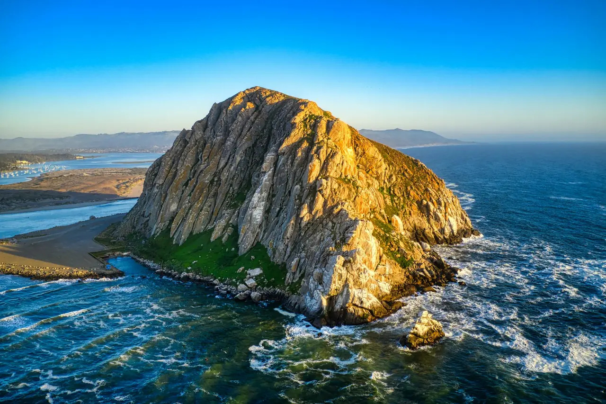

San Luis Obispo: Central Coast's Sunny College Town
· By GoldenPath Guide Editorial Team
Smack in the middle of the Central Coast, where volcanic peaks and golden hills tumble down toward the sea, sits San Luis Obispo — a compact college town that locals just call SLO. Anthony Bourdain and National Geographic have both named it one of the happiest places in America, and once you've spent a Thursday evening on its pedestrian-friendly main street, you'll see why. Here, good food and good beer are taken seriously, and the great outdoors is never more than a short walk away.
Start at the Mission
Begin with the Mission San Luis Obispo de Tolosa, founded by Spanish settlers in 1772. It is a working church, and its free docent-led tours open up centuries of art, architecture, and garden in about half an hour. A small bonus: the mission bell is rung every day at noon and six in the evening, and the person who pulls that rope is a lifelong local volunteer who has never missed a shift — a detail that tells you a lot about how this town works.
Just a few blocks away, the San Luis Obispo Museum of Art showcases contemporary work by Central Coast artists, and the Children's Museum offers hands-on fun for younger travelers.
Bubblegum Alley & the First Motel
Downtown SLO hides a couple of genuinely quirky icons. Bubblegum Alley is a narrow walkway about 21 meters (70 feet) long where roughly two million pieces of chewed gum have been stuck to the walls over the decades — an odd, colorful, thoroughly college-town landmark that makes for a memorable photo. Nearby on Monterey Street, you can stand at the site of the world's first motel, opened here in 1925. It was the humble idea that launched the age of the American road trip. Keep an eye out, too, for beautifully preserved 1940s architecture like the Art Deco Fremont Theater.
Thursday Night Farmers' Market
On Thursday evenings, Higuera Street transforms into one of the best farmers' markets in California. It spans five blocks and brings together more than a hundred farmers and vendors, with barbecue sizzling over charcoal, live music, fresh vegetables, and warm baked goods. Sample the region's famous Santa Maria-style barbecue while you wander. The energy here — families, students, and locals all out at once — is the heart of SLO.
- SLO International Film Festival (April) — a spring highlight for cinema lovers.
- Art After Dark (first Friday monthly) — galleries stay open late with free music.
- Concerts in the Plaza (free, summer weekends) — check the schedule if you're around.
Craft Beer & Nearby Wine
SLO is also a craft-beer town. SLO Brew has been pouring since 1988, Libertine pairs pints with live music, Oak & Otter carries non-alcoholic options too, and Central Coast Brewing displays a fun collection of vintage bicycles. If you'd rather taste wine, head up toward Edna Valley, where cool ocean-influenced breezes produce superb Pinot Noir and Chardonnay at a string of small wineries. The region around SLO — Edna Valley, Arroyo Grande, and Paso Robles to the north — shelters some 250 wineries and tasting rooms.
When to Go & Getting Around
SLO enjoys a mild, sunny Central Coast climate, with warm dry summers and gentle winters — pleasant any time of year. The town is small enough to cover on foot, but having a rental car makes it easy to circle the surrounding wine valleys and nearby beaches like Pismo and Morro Bay.
Hiking the Nine Sisters & Nearby Trails
The volcanic plugs ringing SLO reward boots. Bishop Peak rises 1,546 feet with a 3.5-mile round trip from the Patricia Drive trailhead, and the summit surveys the full valley to Morro Bay. Madonna Mountain (Cerro San Luis) climbs 1,292 feet on a 3.2-mile loop with 1,000 feet of gain — a 90-minute workout at moderate pace. Montana de Oro State Park, 20 minutes southwest, threads 8,000 acres of bluffs and tide pools along 7 miles of coastline, with parking at $8 per vehicle where signed. Mornings before 10am bring the coolest air and emptiest lots; carry a liter of water per person, since only trailheads near town offer fountains. Rattlesnakes rest along warm rocks from April through October, so step onto, not over, boulders.
Day Trips: Coast, Wine & Hearst Castle
SLO sits at the hub of four easy spokes. Morro Bay and its 581-foot rock lie 20 minutes northwest, with kayak rentals near $25 per hour and otter sightings most mornings. Pismo Beach stretches 25 minutes south with clam chowder bowls near $12–$15 on the pier. Paso Robles wine country runs 35 minutes north, where tasting fees range $20–$35 and reservations are standard on weekends. Hearst Castle at San Simeon takes 60–75 minutes up Highway 1, with daytime tours around $25 for adults — book 2–4 weeks ahead in summer. The Amtrak Coast Starlight and Pacific Surfliner both stop downtown, linking SLO to Santa Barbara in about 2 hours and Los Angeles in 5.